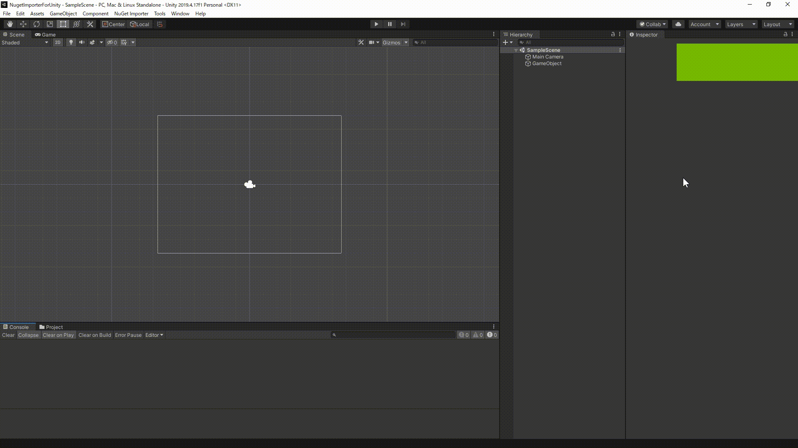

English
Welcome to NuGet importer for Unity


"NuGet importer for Unity" is a fast, easy-to-use, and powerful editor extension that provides you to import NuGet packages into Unity.
This package also fully supports native plugins.
(This was inspired by GlitchEnzo/NuGetForUnity, but made from scratch.)
日本語はこちら。

Usage
For information on how to install and use this package, please see [usage].(documentation/usage.html).
Environment
Version 4 series works with Unity2020.3 or later, but compile errors occur once with Unity2020.3 due to Unity's compile pipline issues. To use NuGet importer for Unity, you restart Unity and open with ignore the compile error. If you are using an earlier version of Unity, use version 3.3.2. Version 3 series and below works with Unity2020 and later. This even works with Unity2019, but it is not recommended due to some specification issues.
API
The API documentation is available here.
Contributing
We welcome any contributions (bug reports, desired features). If you wish to contribute, be sure to review our Contribution guide
License
This package is under Apache License 2.0.
Each package in NuGet is governed by the terms included with the package. For more details, see NuGet F&Q.
Author
kumaS (If I cannot use this name because it is used, add -nu as a tag.)
Twitter
日本語
Welcome to NuGet importer for Unity

NuGet importer for Unity は高速で使いやすく、非常に強力に NuGet のパッケージを Unity へ導入できるようにするエディタ拡張です。 また、ネイティブプラグインに対しても完全に対応しております。 （GlitchEnzo/NuGetForUnity に影響を受けましたが一から作ってます。）
使い方
このパッケージの導入法や使い方に関しては、使い方をご覧ください。
動作環境
バージョン4系はUnity2020.3以降であれば動作します。しかし、Unity2020.3では仕様上の問題より一度コンパイルエラーが発生します。 Unityを再起動しコンパイルエラーを無視して開けば動作するようになります。それ以前のUnityであればバージョン3.3.2を使用してください。 バージョン3系以下はUnity2020以降であれば動きます。Unity2019でも動作しますが、仕様上の問題より推奨しません。
API
APIのドキュメントはこちらにあります。ご活用ください。
コントリビュート
どんなコントリビュート（バグ報告やほしい機能）でもしていただけるとありがたいです。具体的なやり方はコントリビューションガイドをご覧ください。
ライセンス
これについては、Apache License 2.0 です。
NuGet のパッケージについてはそれぞれのライセンスに従います。詳細は NuGet の F&Q をご覧ください。